File: 000540.gt.txt (if the image is defective, simply delete all Arabic text and the line will be excluded)
واحدة ، وقال غيره : وقد جاء «مكان سوى »(1) .
File: 000541.gt.txt (if the image is defective, simply delete all Arabic text and the line will be excluded)
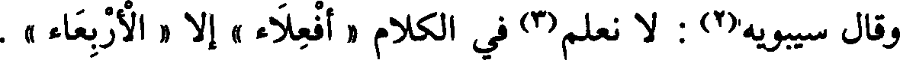
وقال سيبويه(2) : لا نعلم(3) في الكلام « أفعلاء » إلا « الأربعاء » .
File: 000542.gt.txt (if the image is defective, simply delete all Arabic text and the line will be excluded)
قال أبو محمد(4) : قال لي أبو حاتم : قال لي(5) أبو زيد : وقد جاء
File: 000543.gt.txt (if the image is defective, simply delete all Arabic text and the line will be excluded)
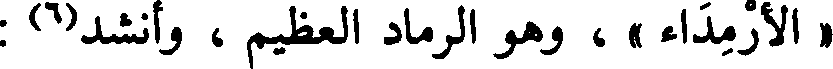
« الأرمداء » ، وهو الرماد العظيم ، وأنشد(6) :
File: 000544.gt.txt (if the image is defective, simply delete all Arabic text and the line will be excluded)
لم يبق هذا الدهر من آيائه غير أثافيه وأرمدائه
File: 000545.gt.txt (if the image is defective, simply delete all Arabic text and the line will be excluded)
جمع آي(7) على آياء وهو أفعال .
File: 000546.gt.txt (if the image is defective, simply delete all Arabic text and the line will be excluded)
وقال سيبويه(8) : وليس في الكلام [ 612 ] « يفعول » فأما قولهم :
File: 000547.gt.txt (if the image is defective, simply delete all Arabic text and the line will be excluded)
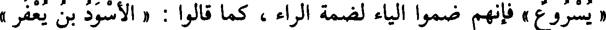
« يسروع » فإنهم ضموا الياء لضمة الراء ، كما قالوا : « الأسود بن يعفر »
File: 000548.gt.txt (if the image is defective, simply delete all Arabic text and the line will be excluded)
فضموا الياء لضمة الفاء ، ويقوي هذا أنه ليس في الكلام يفعل .
File: 000549.gt.txt (if the image is defective, simply delete all Arabic text and the line will be excluded)
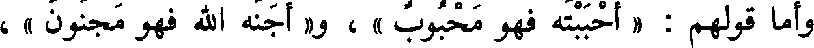
وأما قولهم : « أحببته فهو محبوب » ، و« أجنه الله فهو مجنون » ،
File: 000550.gt.txt (if the image is defective, simply delete all Arabic text and the line will be excluded)
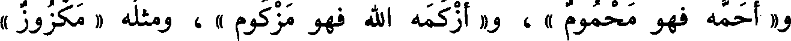
و« أحمه فهو محموم » ، و« أزكمه الله فهو مزكوم » ، ومثله « مكزوز »
File: 000551.gt.txt (if the image is defective, simply delete all Arabic text and the line will be excluded)
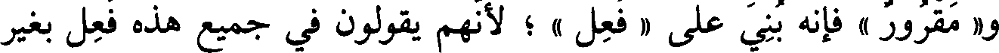
و« مقرور » فإنه بني على « فعل » ؛ لأنهم يقولون في جميع هذه فعل بغير
File: 000552.gt.txt (if the image is defective, simply delete all Arabic text and the line will be excluded)
ألف ، يقولون « حب » و« جن » و« زكم » و« حم » و« قر » و« كز » ، قال :
File: 000553.gt.txt (if the image is defective, simply delete all Arabic text and the line will be excluded)
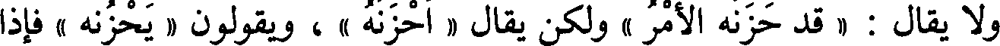
ولا يقال : « قد حزنه الأمر » ولكن يقال « أحزنه » ، ويقولون « يحزنه » فإذا
File: 000554.gt.txt (if the image is defective, simply delete all Arabic text and the line will be excluded)
قالوا « أفعله » الله فكله بالألف ، ولا يقال « مفعل » في شيء [636] من
File: 000555.gt.txt (if the image is defective, simply delete all Arabic text and the line will be excluded)
هذه ، إلا في حرف واحد ؛ قال عنترة(1) :
File: 000556.gt.txt (if the image is defective, simply delete all Arabic text and the line will be excluded)
ولقد نزلت فلا تظني غيره مني بمنزلة المحب المكرم
File: 000557.gt.txt (if the image is defective, simply delete all Arabic text and the line will be excluded)
قال البصريون : تقدير « إنسان » فعلان ، زيدت الياء في تصغيره كما
File: 000558.gt.txt (if the image is defective, simply delete all Arabic text and the line will be excluded)
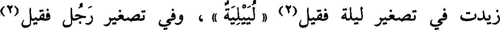
زيدت في تصغير ليلة فقيل(2) « لييلية » ، وفي تصغير رجل فقيل(2)
File: 000559.gt.txt (if the image is defective, simply delete all Arabic text and the line will be excluded)
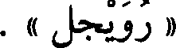
« رويجل » .
File: 000560.gt.txt (if the image is defective, simply delete all Arabic text and the line will be excluded)
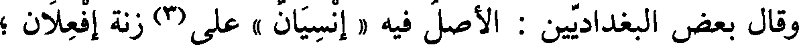
وقال بعض البغداديين : الأصل فيه « إنسيان » على(3) زنة إفعلان ؛
File: 000561.gt.txt (if the image is defective, simply delete all Arabic text and the line will be excluded)
فحذفت الياء استخفافا ؛ لكثرة ما يجري على ألسنتهم ، فإذا صغروه قالوا
File: 000562.gt.txt (if the image is defective, simply delete all Arabic text and the line will be excluded)
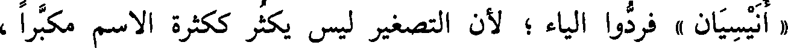
« أنيسيان » فردوا الياء ؛ لأن التصغير ليس يكثر ككثرة الاسم مكبرا ،
File: 000563.gt.txt (if the image is defective, simply delete all Arabic text and the line will be excluded)
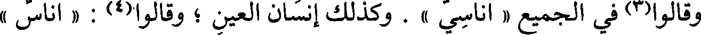
وقالوا(3) في الجميع « أناسي » . وكذلك إنسان العين ؛ وقالوا(4) : « أناس »
File: 000564.gt.txt (if the image is defective, simply delete all Arabic text and the line will be excluded)
في الناس ، ولا يقال ذلك في إنسان العين .
File: 000565.gt.txt (if the image is defective, simply delete all Arabic text and the line will be excluded)
قال : وروي عن ابن عباس(5) رضي الله عنه أنه قال : إنما سمي إنسانا
File: 000566.gt.txt (if the image is defective, simply delete all Arabic text and the line will be excluded)
قال : « وفعالة » تأتي كثيرا في فضلة الشيء وفيما يسقط منه(1) ،
File: 000567.gt.txt (if the image is defective, simply delete all Arabic text and the line will be excluded)
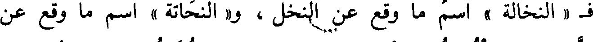
ف « النخالة » اسم ما وقع عن النخل ، و« النحاتة » اسم ما وقع عن
File: 000568.gt.txt (if the image is defective, simply delete all Arabic text and the line will be excluded)
النحت ، و« القوارة » اسم ما وقع عن التقوير ، و« قلامة الظفر » اسم ما وقع
File: 000569.gt.txt (if the image is defective, simply delete all Arabic text and the line will be excluded)
عن التقليم(2) ، و« السحالة » اسم ما وقع عن السحل ، و« الخلالة » اسم ما
To Save: `Ctrl+s`, make sure to choose `Webpage, complete`!